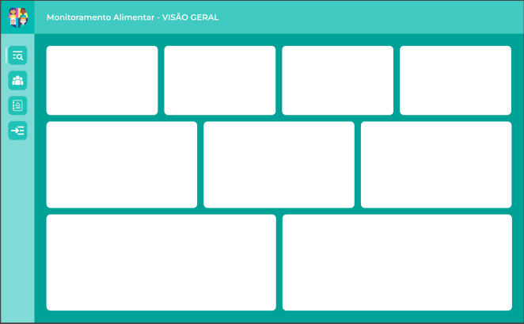
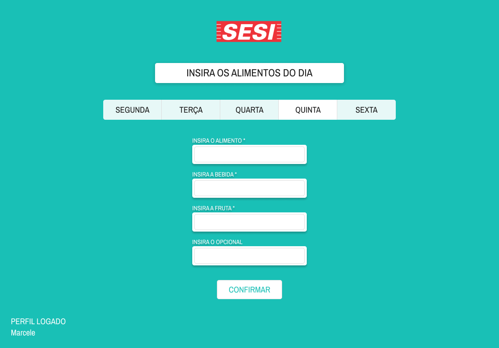
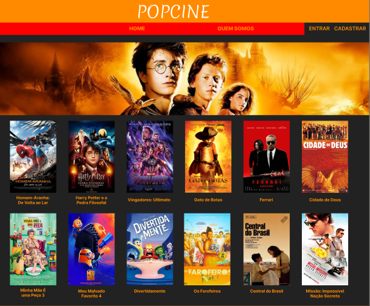

Ciência de Dados Aplicada a Projetos Sociais
Projeto de extensão universitária voltado à organização, centralização e análise de dados para apoio às instituições parceiras.
Conheça o ProjetoProjeto de extensão universitária voltado à organização, centralização e análise de dados para apoio às instituições parceiras.
Conheça o ProjetoO projeto busca estruturar informações atualmente organizadas em planilhas, criando uma plataforma centralizada para acompanhamento e visualização de dados.
Organização das informações em uma única estrutura de dados.
Redução de processos manuais e maior padronização das informações.
Desenvolvimento de dashboards e gráficos para acompanhamento dos dados.
Informações distribuídas em múltiplos arquivos e formatos.
Limitação no acesso rápido às informações do projeto.
Atualizações e análises realizadas manualmente.
Estruturação e consolidação das informações.
Automação de processos e tratamento de dados.
Visualização rápida e acessível das informações.
Apoio à tomada de decisão por meio da análise de dados.
Exemplos de interfaces e gráficos desenvolvidos durante o planejamento do projeto.


